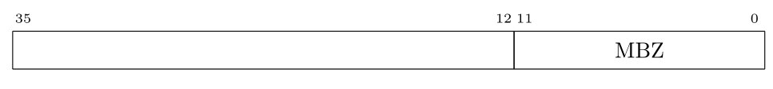
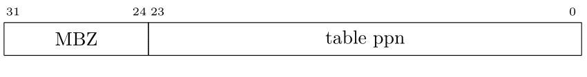
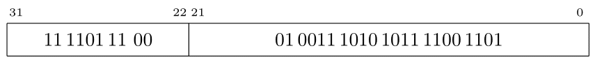

Course (taught and being teached) >>> Current Semester >>> 2022-3B >>> מבוא לארכיטקטורת מחשבים >>> >>> 2022-08-31 >>> כתובת וירטואלית 32, כתובת פיזית 36, גודל דף 4KB
כתובת וירטואלית נראית כך:

גודל דף הוא
4KB
ולכן שדה ההיסט ברוחב 12 ביטים
(212 = 4 × 210 = 4K).
ולכן יש עשרים ביטים בשדה מספר דף וירטואלי.

כיון שגודל דף וירטואלי וגודל דף פיזי שווים,
כתובת פיזית נראית כלהלן:
כיון שרוחב ה-vpn הוא 20 ביטים, בטבלת התירגום יש לכל היותר 220 = 1M מקומות. מספר זה הינו בהחלט עצום מכדי להחזיק אוגרים ב-mmu עבורו, כפי שציינו בעבר. הבעייה שנוספת לנו עכשיו היא שגודל טבלת התרגום יכול להגיע ל-8MB. אם נשתמש בשיטת הקודמות המשמעות היא שאנחנו צריכים 2048 דפים רציפים פיזית כדי להחזיק את טבלת התירגום. (2048 דפים שבכל אחד מהם יש 512 כניסות יתן לנו 220 כניסות.) זה כמובן לא בא בחשבון. אחת המוטיבציות לשימוש בטבלאות תירגום היא להיפטר מדרישות רציפות קיצוניות. וכאשר גודל דף הוא 4KB כל דרישת רציפות פיזית שהיא מעל 4KB נחשבת קיצונית!
נפתור את הבעיה בדיוק כפי שפתרנו אותה עבור הזיכרון של התוכנית. כלומר נארגן טבלת תירגום עבור טבלת תירגום. כלומר נפצל את טבלת התירגום ל-8192 טבלאות פנימיות, כאשר כל טבלה פנימית תתפוס 4KB. היינו רוצים טבלה חיצונית שבה יהיה מקום ל-8192 כתובות בהן נמצאות הטבלאות הפנימיות. הבעיה היא שבדף יש מקום רק ל-512 כניסות. ולכן שוב נאלץ לפצל. במקום טבלה חיצונית עם 8192 כניסות יהיו לנו 16 טבלאות פנימיות (16 × 512 = 8192) כל אחת בגודל דף. ולבסוף תהיה לנו טבלה חיצונית אחת ובה 16 כניסות.
שימו לב שבבניה הנ"ל, כל פעם שבנינו טבלה ברמה מסויימת, אם היא תפסה יותר מדף, פיצלנו אותה והוספנו עוד רמה. תהליך זה ימשיך עד שנגיע לרמה בה הטבלה נכנסת לדף אחד.
גכמובן, לפי חוק שימור הנאחס, משהו חייב להינזק. ואכן זמן הריצה ניזוק כיון שנצטר ךשלוי גישות לזיכרון כדי לתרגם כתובת וירטואלית לכתובת פיזית.
סך הכל: ב-mmu יהיה אוגר שיכיל את הכתובת הפיזית של הטבלה החיצונית. בטבלה החיצונית יש 16 כניסות שמצביעות לטבלאות אמצעיות בכל טבלה אמצעית יש 512 כניסות שמצביעות לטבלאות פנימיות. ובכל טבלה פנימית יש 512 מצביעים לדפים של התוכנית.
בכל כניסה צריך מקום ל-24
ביטים עבור
ppn,
ובנוסף לדגלים.
אנחנו נשתמש בכניסה ברוחב 84 בתים במקרה זה.
נניח שכניסה בטבלת התרגום נראית כך:
נשאר לנו פריט אחד וזה מבנה האוגר
ב-mmu
שמצביע על טבלת התרגום.
על פניו מדובר פשוט באוגר ברוחב 36 ביטים
שמכיל את כתובת תחילת הווקטור
(וש-12 הביטים הימניים שלו מאופסים).

כמובן שבימינו אף אחד לא מתכנן אוגר ברוחב 36 ביטים.
אזי אוגר ברוחב 8 בתים הוא הגודל הסביר הבא.
הבעיה החמורה יותר היא שבעליל מדובר במכונת 32 ביטים.
ובמכונה כזו אין פקודה שמטעינה ערך לאוגר שרוחבו גדול מ-32 ביטים.
ולכן בדילמה שנוצרה אפשר גם להחליט שהאוגר יהיה ברוחב 32 ביטים!

שימו לב למשמעות של החלטה כזו. דף של תוכנית יכול להמצא בכל דף בזכרון הפיזי. גם כל טבלה פנימית וכל טבלה אמצעית יכולה להימצא בכל דף שהוא בזכרון הפיזי. אבלהטבלה החיצוניתם יכולה להמצא רק ב-4GB הנמוכים של הזכרון הפיזי. זה דורש ממערכת ההפעלה לנהל את הזכרון בצורה חדשה: להקצות כל מה שאפשר בכתובות גבוהות ורק כשאין ברירה, או שמקצים טבלה חיצונית, להשתמש בכתובות הנמוכות.
זה כמובן לא משפיע כהוא זה על התוכניתן במצב משתמש. רק כותבי מערכת ההפעלה סובלים מהחלטה הזו.
כזכור מהדוגמא הקודמת, יש מערכות שבהן באוגר אין את כתובת הטבלה אלא יש בו את מספר הדף הפיזי בו נמצאת הטבלה. פה אכן יש לנו יתרון לא צפוי. יש לנו ארבעה ביטים (ויותר) שאפשר להשתמש בהם: 
ואחרי כל זה, איך ה-mmu ידע לחשב כתובת פיזית?
לוגית
עדיין יש לנו טבלת תרגום.
נניח שהמשתנה
pagetbl
מתאר ווקטור שכל כניסה בו היא בגודל 8 בתים.
אזי שליפת הכניסה המתאימה היא מיידית:
pagetbl[vpn].
כיוון שטבלת התרגום פוצלה צריך לדעת באיזה "חתיכה" נמצאת
הכניסה
vpn.
זה קל.
בכל חתיכה יש
512 × 512 = 218 כניסות.
ולכן הכניסת
vpn
נמצאת בחתיכה
vpn/(2<sup>18</sup>).
נקרא לערך הזה
i0.
בעזרת האינדקס הזה ניגש לטבלה החיצונית וכך נקבל את הכתובת
של הטבלה האמצעית
(כמובן, יש מחיקת ביטים, ואולי הזזות).
בהינתן הכתובת של הטבלה האמצעית איך נמצא בה את הכניסה
המתאימה?
ובכן, יש פשוט השארית
vpn % (2^18).
וערך זה נחלק ב-512,
נקרא לערך זה
i1.
כלומר
i1 = (vpn % 2**18)/512
וזה האינדקס הנחוץ לגישה לטבלה האמצעית.
כמובן "שבמקרה" החלוקה והשארית הן חזקות של 2,
כך שלמעשה מדובר בשדות של ביטים שקל לצייר:
נאצר שכתובות וירטואליות שנראות כמו השירטוט למעלה הן מהצורה (2,9,9,12).
הטבלה ארוכה מכדי שנרשום אותה פה... נניח שטבלת התרגום מתחילה בכתובת ABCDE000.
לאיזו כתובת פיזית תתורגם הכתובת הוירטואלית
F713ABCD?
נתרגם לבינרית:

משמע
ה-vpn
הוא
3DC.
ה-vpn
הינו אינדקס לווקטור, ולצורך גישה לזכרון צריך לחשב את הכתובת.
לכן צריך להכפיל את האינדקס פי 4.
זה יותר קל בבינרית:
11 1101 11 002 × 410 = 1111 0111 00002 = F7016
אז עכשיו צריך להסתכל בזכרון בכתובת
ABCDEF70.
נניח שזה התוכן:

ה-valid
הוא אמת.
לכן לשדה
ppn,
שערכו 1101111011,
יש משמעות והוא יחליף את
ה-vpn של הכתובת הוירטואלית
F713ABCD.
כלומר נקבל:

ובהקסה הכתובת הפיזית היא DED3ABCD.